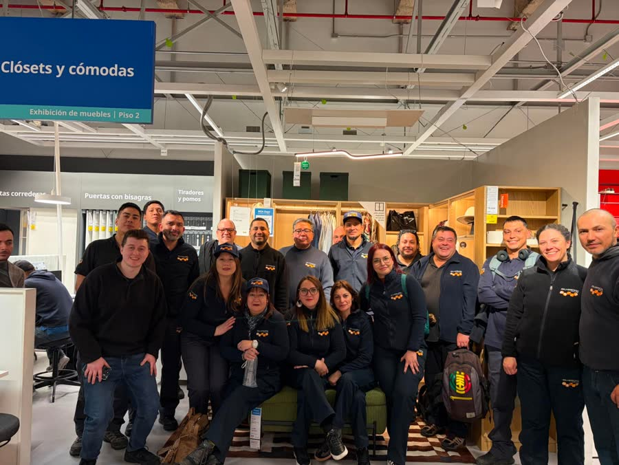
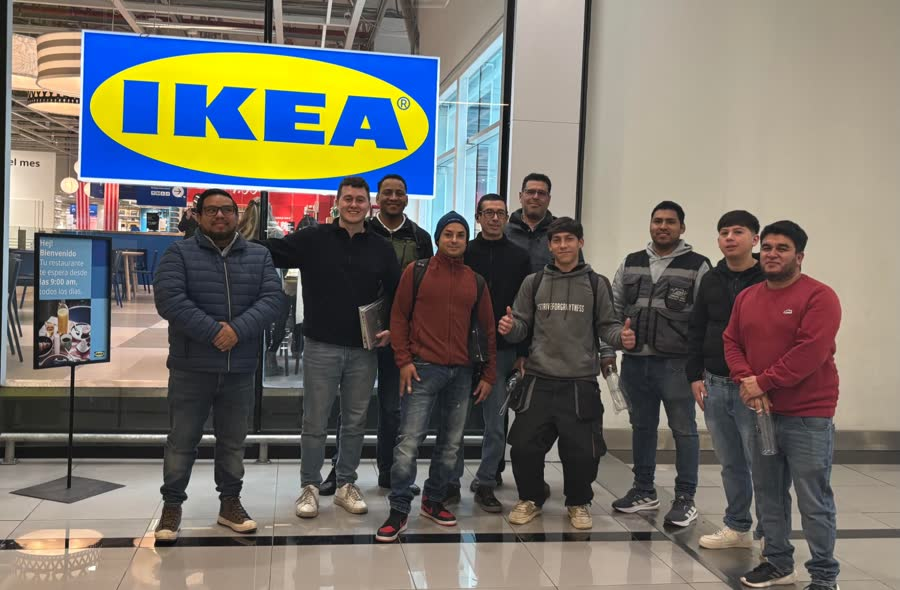

↻ Pasa el cursor↻ Toca para girar
Services Specialist IKEA Chile, Colombia y Perú
- Coordinación de capacidad de proveedores de armado, medición e instalación, y resolución de incidencias con áreas internas.
- Seguimiento de indicadores y SLA mediante reportes y dashboards en Looker Studio.
- Desarrollo e implementación de una app web con IA generativa para gestionar proyectos de cocinas en Chile y Colombia, evolucionando una solución inicial en Power Apps; alcance de más de 100 colaboradores.
- Automatización de flujos y reportería con Power Automate. Capacitación de 70 colaboradores en la herramienta.
Services Specialist · IKEA
Capacitaciones a proveedores externos de armado
Para alinear la operación y que el cliente final tenga una gran experiencia.

